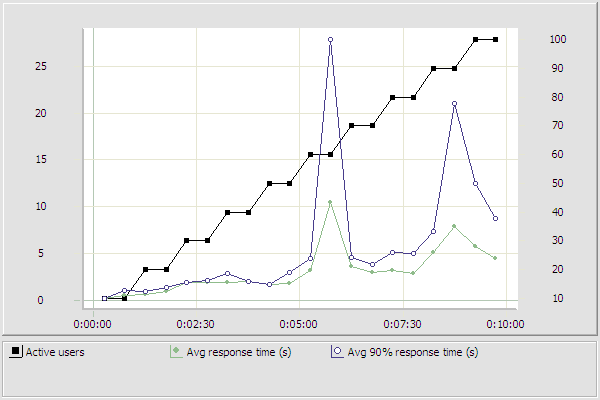
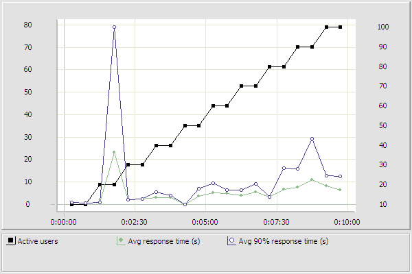
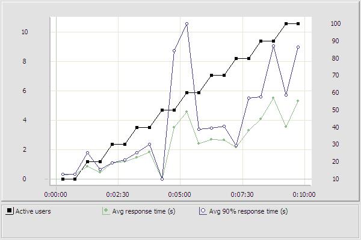
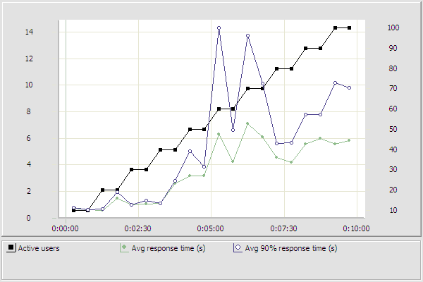
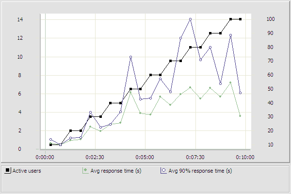

FacilityLevel_Subsheet_01_User.page_1: http://prtr-demo.eea.europa.eu/home.aspx
URI: "http://prtr-demo.eea.europa.eu:80/home.aspx"

FacilityLevel_Subsheet_01_User.page_2: http://prtr-demo.eea.europa.eu/login.aspx?ReturnUrl=%2fhome.aspx
URI: "http://prtr-demo.eea.europa.eu:80/login.aspx?ReturnUrl=%2fhome.aspx"

FacilityLevel_Subsheet_01_User.page_3: http://prtr-demo.eea.europa.eu/home.aspx
URI: "http://prtr-demo.eea.europa.eu:80/home.aspx"

FacilityLevel_Subsheet_01_User.page_4: http://prtr-demo.eea.europa.eu/FacilityLevels.aspx
URI: "http://prtr-demo.eea.europa.eu:80/FacilityLevels.aspx"

FacilityLevel_Subsheet_01_User.page_5: http://prtr-demo.eea.europa.eu/FacilityLevels.aspx
URI: "http://prtr-demo.eea.europa.eu:80/FacilityLevels.aspx"
FacilityLevel_Subsheet_01_User.page_6: http://prtr-demo.eea.europa.eu/FacilityLevels.aspx
URI: "http://prtr-demo.eea.europa.eu:80/FacilityLevels.aspx"

FacilityLevel_Subsheet_01_User.page_7: http://prtr-demo.eea.europa.eu/FacilityLevels.aspx
URI: "http://prtr-demo.eea.europa.eu:80/FacilityLevels.aspx"

FacilityLevel_Subsheet_01_User.Facilities
URI: "http://prtr-demo.eea.europa.eu:80/FacilityLevels.aspx"

FacilityLevel_Subsheet_01_User.Confidentiality
URI: "http://prtr-demo.eea.europa.eu:80/FacilityLevels.aspx"